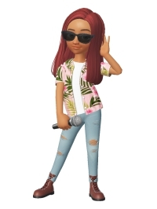
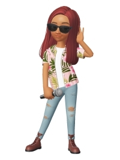

お手手とお顔の使い方 [梅吉]
〜本日、月曜日はお出かけして来ます。みな様のブログへは火曜日から遊びに伺いますね＾＾〜
行き倒れっぽくも見えますが幸せ「ちゅうちゅう」タイムです。

お手手がびよ〜んって伸びてきちゃうんですよね＾＾
こんな格好のまま寝ちゃうんですよ。
このお手手は器用でもあります。
（18秒。音無しです＾＾）
手も器用だけど顔も器用かも、ですねwww
〜真面目な健康のお話〜
（結果は全く問題なし、だったので安心してお読みください）
堀ちえみさん舌がんのニュース。ご記憶の方も多いと思います。
ニュースを聞いた時ちょうど私も舌の付け根から舌の側面にかけてちょっとした違和感がありました。
口内炎も出来やすいので気になってかかりつけの歯科の医師に相談すると
紹介状を書くので大きな病院へ行ってくださいとのこと。
（この時点で99%問題はないとの見立てだったのですが専門医から太鼓判もらって、と）
で、総合病院の口腔外科を受診しました。
口腔外科で看護師の問診でも医師にもしつこく聞かれたのが
「食べ物が飲み込み難いかどうか？」でした。
舌がんは「飲み込み難い」症状がキーワードの様です。
（加齢による嚥下力の低下、咽頭がんそのものの可能性もありますが）
食事の時の違和感は全くなかったのでこの点はクリア。
気になる舌の違和感は腫瘍などが出来ていると部分的に硬くなったりするようなんですが
触診でもその症状は全くなし。
むしろとっても健康な口内状況ですと褒められました。
時々感じる違和感は扁桃腺にちょっとした異常があると
その影響が舌にも出ると思われますとの事でした。
思えば風邪っぽい時や頭の痛い時に舌の違和感があったかも。やれやれ。
心配はしてなかったのですがやっぱり診てもらって良かったです。
歯科でも口腔外科でもそうだったのですが
口の中の診察では舌を前に右に左に引っ張られて舌の付け根等をぐいぐい指で押されるので
「ぐえっ」となるし結構辛いです。
もし受診される方がいらっしゃったら覚悟して行ってくださいね。
舌を前に右に左に引っ張られた経験の持ち主はそんなにいなかろう、と記事にしてみました。
 ↑ガブッと一押し↑
↑ガブッと一押し↑
妄想劇場後半、と思ったのですが先日のミッションがツボだったのでこちらを優先です。

「みんなの声を聞かせておくれー！」とステージ上でおっしゃる謎のミュージシャン、てんてんさん。
この日のミッションはR&B、レゲェ、ブラックミュージシャン（風の装いをする）。
ミッションはmarimoさんが提案してくれてます。
ミッションに合わせて各人が工夫を凝らして変身して遊ぶんですよ。
marimoさん、いつもミッションの提案ありがとうねー！
今度は
「アイドルな私コーデ」「どきどき♡ サークル新歓コンパ（新入生編と上級生編）コーデ」
（今コンパって死語ですか？）「パンクファッション」
なんて如何でしょう(*>艸<)
新人アーティストのChiiがてんてんさんと共演しましたが持ってかれてますw
小娘二人でも歯が立ちませんw
大御所ソウルシンガーのChatBleuさんで釣り合う感じでしょうか＾＾
バックダンサーを従えてフェスティバルホールで熱唱。
ポールのピアノでも歌いますよ！
（2015年4月 京セラドームにて。場内スクリーンに映ったポールをパチリしました＾＾）

emiちゃんとはいつも楽屋でじゃれあってます。
衣装も同じの作ったから今度ジョイントライブしようよー！
行き倒れっぽくも見えますが幸せ「ちゅうちゅう」タイムです。

お手手がびよ〜んって伸びてきちゃうんですよね＾＾
こんな格好のまま寝ちゃうんですよ。
このお手手は器用でもあります。
（18秒。音無しです＾＾）
手も器用だけど顔も器用かも、ですねwww
〜真面目な健康のお話〜
（結果は全く問題なし、だったので安心してお読みください）
堀ちえみさん舌がんのニュース。ご記憶の方も多いと思います。
ニュースを聞いた時ちょうど私も舌の付け根から舌の側面にかけてちょっとした違和感がありました。
口内炎も出来やすいので気になってかかりつけの歯科の医師に相談すると
紹介状を書くので大きな病院へ行ってくださいとのこと。
（この時点で99%問題はないとの見立てだったのですが専門医から太鼓判もらって、と）
で、総合病院の口腔外科を受診しました。
口腔外科で看護師の問診でも医師にもしつこく聞かれたのが
「食べ物が飲み込み難いかどうか？」でした。
舌がんは「飲み込み難い」症状がキーワードの様です。
（加齢による嚥下力の低下、咽頭がんそのものの可能性もありますが）
食事の時の違和感は全くなかったのでこの点はクリア。
気になる舌の違和感は腫瘍などが出来ていると部分的に硬くなったりするようなんですが
触診でもその症状は全くなし。
むしろとっても健康な口内状況ですと褒められました。
時々感じる違和感は扁桃腺にちょっとした異常があると
その影響が舌にも出ると思われますとの事でした。
思えば風邪っぽい時や頭の痛い時に舌の違和感があったかも。やれやれ。
心配はしてなかったのですがやっぱり診てもらって良かったです。
歯科でも口腔外科でもそうだったのですが
口の中の診察では舌を前に右に左に引っ張られて舌の付け根等をぐいぐい指で押されるので
「ぐえっ」となるし結構辛いです。
もし受診される方がいらっしゃったら覚悟して行ってくださいね。
舌を前に右に左に引っ張られた経験の持ち主はそんなにいなかろう、と記事にしてみました。
妄想劇場後半、と思ったのですが先日のミッションがツボだったのでこちらを優先です。

「みんなの声を聞かせておくれー！」とステージ上でおっしゃる謎のミュージシャン、てんてんさん。
この日のミッションはR&B、レゲェ、ブラックミュージシャン（風の装いをする）。
ミッションはmarimoさんが提案してくれてます。
ミッションに合わせて各人が工夫を凝らして変身して遊ぶんですよ。
marimoさん、いつもミッションの提案ありがとうねー！
今度は
「アイドルな私コーデ」「どきどき♡ サークル新歓コンパ（新入生編と上級生編）コーデ」
（今コンパって死語ですか？）「パンクファッション」
なんて如何でしょう(*>艸<)
新人アーティストのChiiがてんてんさんと共演しましたが持ってかれてますw
小娘二人でも歯が立ちませんw
大御所ソウルシンガーのChatBleuさんで釣り合う感じでしょうか＾＾
バックダンサーを従えてフェスティバルホールで熱唱。
ポールのピアノでも歌いますよ！
（2015年4月 京セラドームにて。場内スクリーンに映ったポールをパチリしました＾＾）

emiちゃんとはいつも楽屋でじゃれあってます。
衣装も同じの作ったから今度ジョイントライブしようよー！

カフェオレ色の梅吉

梅吉 2023年8月10日 永眠


梅吉と出会った譲渡会

犬猫の理由なき殺処分ゼロ
妄想広告
UMEKICHI 光

爆発的に早い！
時々攻撃的！
Thanks to Mr.Boss365
爆発的に早い！
時々攻撃的！
Thanks to Mr.Boss365

梅吉さん行き倒れか何かに挟まって抜けないのかと思っちゃいました。ちゅうちゅう満喫中だったんですね。ドアを開ける様子は内側からお顔がむにゅうと入ってくるところが見たいです~。
by zombiekong (2019-03-18 00:25)
ただの口内炎だと思ってたらガンだった！
ってのが堀さんのお話ですもんね。
コレでスッキリしましたね＾＾
by ぽちの輔 (2019-03-18 06:35)
口内環境 お褒めの言葉を頂き、おめでとうございます これで安心ですね
梅吉さん 器用なのは 頭、手？ お利口さんなんです♪
by チャー (2019-03-18 06:52)
口内環境大事ですね。そろそろ歯科健診予約とります。
梅吉さん、器用に突破しましたね。
by ニコニコファイト (2019-03-18 07:05)
梅吉くん、ちゅうちゅうタイム、かわいい！特にお手々がかわいらしいーーー！
手をちょこちょことしてドアを開ける動作、あれ、みんニャああやるけど、なんでぐわっ！と動かさないのかなーって不思議です。しかし！結局は顔！！！素晴らしい！これは梅吉くんにしかできない技だわ。
検査、お疲れ様でした。問題なくてよかったです。堀ちえみさんの件、みんながこうやって、自分の体を気にして、ちゃんと受診するようになっていいことだな、って思います。おまけにちぃさんの体を張った(笑)検査報告のおかげで、もし、おかしいなって思うことがあったら、がんばろうと思った(^^;;
ZEPETO、てんてんさんが別人でしたねー。面白かった！
お題の提案、またこんなおもしろいお題が出ちゃったら、妄想劇場がなかなか公開できなくなっちゃいますよーー^m^
by ChatBleu (2019-03-18 07:08)
気になったら検査ですよね。
先週、定期的な大腸内視鏡検査を受けてきましたが、大きなポリープが見つかりドキッとしましたが、問題なしとのことでホッとしたところです(^_^)
梅吉さん、器用ですね！家の中は引き戸が多いですが、下の方は猫が無理矢理開けて出入りしていたので、もうボロボロになってます(^_^;)
by kou (2019-03-18 08:20)
そうかー。舌の検査ってそんな風にするんやね。
ともあれ、無事が分かってスッキリ！
手が器用か、顔が器用かの話、やっぱ手かなー。
それよりあんな狭い隙間をスルリと抜けていこくとに
びっくりですわー(^｡^)
by よーちゃん (2019-03-18 08:32)
ちゅうちゅうタイム♪
なんて可愛い時間なのでしょう(#^.^#)
伸ばしたおててもたまりませんね！
器用なおてても使いますが
お顔もグイーンと！
Ｌｅａは手が短いので
手じゃなくて、顔をねじ込んであけます（笑
なので引き戸じゃないと無理です(;^_^A
by きぃ (2019-03-18 08:42)
おはようございます。
梅吉君の「ちゅうちゅう」タイム？ダイブしてますね（笑）寝たら溺れますよ？
顔も器用も器用ですが、ドアの素材感が良いですね。
既製品ぽくなくナチュラルな感じ、特注？リフォームしたくなります。
舌の問題？異常がなくて良かったです。
「飲み込み難い」の症状がキーワードみたいですね。
扁桃腺と舌ですか、気を付けます。昔、気管支炎の時は扁桃腺がよく腫れました。
扁桃腺が腫れると熱も出るのでわかりやすいです！？(=^･ｪ･^=)
ZEPETO！！
ちぃさん＆emiさん！！ライダースジャケット？が似合ってます！？(=^･ｪ･^=)
新しいの欲しいな・・・（つぶやき）
by Boss365 (2019-03-18 11:25)
梅吉様、うちの茶色と同じ行き倒れ寝かと思いましたが、
幸せなちゅうちゅうタイムだったんですねぇ(^_-)
扉を開ける前に前後の確認を怠らない梅吉様はさすがです＾＾
検査結果、健康で安心ですねぇ(^^)/
咽喉科に行くといろいろな方向に舌をひっぱられて
「オェ(>_<)」ってなるので検査に行く際は
覚悟したいと思います(^_^;)
by ニッキー (2019-03-18 11:28)
わ～ブランケットから猫が流れ出てる～^^
梅吉さんのお手手びょ～んポーズはピカイチですね！！
ドアちょいちょいも可愛い♪
ウチのは圧倒的に手より顔が出るタイプ。だから怪我多いんですよね(-_-;)
検査結果、何ともなくてよかったです！
口腔外科は親知らずを抜くのに一度行きました。
もう二度と行きたくないけれど、歯茎に埋まったままの親知らずがあと3本あるのです・・・ああ、憂鬱だ・・・。
いつもと違う、は迷わず病院がいいと思います^^
by ゆきち (2019-03-18 12:32)
顔が器用 初めてのワードですがなるほど納得の動画です(*^^*)
お体何ともなくてよかった(*´ω｀*)舌ガンの目安は「飲みこみ難い」ですね！覚えておきます！
by palpal (2019-03-18 14:25)
梅ちゃんもフミフミチュウチュウするのですね♪
このまま寝ちゃうところがかわいいですよね❤
うちも毎日欠かしません(笑)
ドアちょいちょい、うちも同じようにしますね。
そっか、手じゃなく顔が器用だったのかｗｗ
舌癌のNEWSはかなりショッキングでしたね。
違和感があれば早目に受診したほうがいいですよね。
舌を引っ張られたら、もれなくリバースしそうです(笑)
健全な口腔内でよかったです。お疲れさまでしたー！
by カトリーヌ (2019-03-18 16:21)
ちゅうちゅうタイム！！お手手が脱力で可愛い～っ♪
梅吉くんは、一人でできるもん！なんですね。
家のコタローは毛布だけではだめで、私の足とか腕が必要でした・・・。
しつこいーっ！もうやだーっ！！なんて言ってたのに。
今はくるみもタラもちゅうちゅうしないのでちょっと寂しいのです。
とりあえず顔を押し込んでくるのは、わんこもなのよ♪
ぐりぐり入ってきます。ぐりぐり出ていくこともあります(*^-^*)
検査の結果。何も心配なくてよかった！
しかも褒められるくらいだったなんて。
ZEPETO。てんてんさんのロン毛が新鮮だった～。
ホント！太刀打ちできないのよね。
私もいつもとりあえず撮っておこう！が、
ちぃちゃんとじゃれ合いの写真です(*^-^*)
ブログの更新が少ないからなかなか紹介できないけど
写真はたくさんです(≧▽≦)
by emi (2019-03-18 17:08)
梅吉さん、両手が伸びてスーパーマンみたいですね！
手が微妙に震えてドアを開けていますね(^^)
by ma2ma2 (2019-03-18 17:49)
猫さんは、顔と手を上手に使ってドアをこじ開けるということを
改めて確認しました。
うちもNaoちゃんが風呂場のドア、リビングのドアをこうして開けます
リビングのドアの下側にホームセンターで買った隙間テープを貼ったらそれが
ちょうど爪に引っかかって開けやすくなった模様(笑
舌の違和感、何でもなくてよかったです。芸能人も番組の企画の検診で病気が
発見されたケースが多いので、あれ？と思ったら受診するに限りますね。
疑心暗鬼ほどエネルギーの無駄遣いは他にないと思いますので。
by marimo (2019-03-18 21:42)
手のチョイチョイにやられました♪
梅吉さん、うまいこと開けるなあ。
口内診察、異常なしとのことで何よりですね。
ZEPETOさん、凄い変身ぶり！^^;
by yes_hama (2019-03-18 22:18)
レゲェ、ブラックミュージシャンをイメージしてたらこんななってしまいました＾＾；
by てんてん (2019-03-18 22:56)
行き倒れが素敵です。
お手手を前に出して寝るのはユキも良くします。
行き倒れです。
上目で見つめられると幸せな気持ちになります＾＾
by riverwalk (2019-03-18 23:08)
気になったときは病院でちゃんとみてもらうのが
いちばんだよね^^
なんともなくて良かったです。
これで安心だよね。
わたしはベロの手術をしたことがあるので（幼稚園の時）
いじくりまわされる感触怖かったの思い出します^^;
もちろん部分麻酔してるので痛くはないけど、口の中にたっぷり血の味。
あれが忘れらないわーー
昨日はありがとうね！！！^^
by リュカ (2019-03-19 10:05)
口の中は分かりづらいですから
怖いですね
ちゃんと診て貰って安心するのが一番です
by (。・_・。)２ｋ (2019-03-19 23:51)
毛布がかかってなかったら行き倒れみたいな格好だニャ（ﾟ□ﾟ）
私は口の中は、しょっちゅうアルコール消毒(飲酒)してるから大丈夫？
by 英ちゃん (2019-03-20 02:12)
梅吉さんのチュウチュウタイム至福時なのですね。
甘えん坊の梅吉さんというところでしょうか。
梅吉さん、手でチョイチョイと開けるところがツボです。
zombiekongさんが言われるように、
部屋の内側から、お顔ムニュッを見たいです。
口内炎環境が良いちぃさんは長生きされますよ（笑）
by kiki (2019-03-20 16:01)
zombiekongさん＞
確かに！挟まっているようにも見えますよねーw
ドアの隙間からお顔が「むにゅう」は私も見たいです！
そしてそれをカメラに収めるのは至難の技です〜。
ぽちの輔さん＞
大きな病院だし待ち時間はありそうだし
正直面倒だなって思いましたが
行ってスッキリ！受診してよかったです＾＾
チャーさん＞
褒められたのがなかなか人に見せる機会のない口の中で
残念というかなんというか・・・www
お手手は器用でいろんないたずらもバッチリです！
ニコニコファイトさん＞
歯科検診、予約しましたか？＾＾
病院は面倒だけど大事だなって思いましたー！
ChatBleuさん＞
お手手みょーんって可愛いでしょ(*>艸<)
梅吉のドア開け、向こうに押せば開くときは
ぐわっ！と頭突きで開けちゃう時もあるんですよw
これも梅吉技だなって見てます(⌒-⌒;
病院の検査、体張ってきました！！
いやー、あんなに舌を引っ張られると思ってなかったので
びっくりでしたよwww
口腔外科には気をつけろ！です(⌒-⌒;
kouさん＞
ポリープ、良性のもので良かったですね！
これから先、年齢的にも気になったら病院だなぁと
思う今日この頃ですw
引き戸がボロボロ・・・
うちは幼い頃に和室の襖の取っ手を引きちぎりましたよ(⌒-⌒;
よーちゃん＞
行かなくても良いかなとも思ったのですが
やっぱり行って良かったです！
ブログネタにも出来たし何より気分的にスッキリです＾＾
猫は頭さえ通ればするりぬるりと抜けていちゃうんですよー。
きぃさん＞
ちゅうちゅうタイムは梅吉も幸せ
飼い主にとっても可愛い嬉しい時間です＾＾
Leaちゃんの場合は鼻が器用、とか(*>艸<)
Boss365さん＞
このポーズをキャットトンネルの中ですると
ウォータースライダーしている様に見えますよ(≧▽≦)
ドアに目を止めていただけましたか！
マンションはリフォームした時に扉も全部変えました＾＾
ちょっと予算オーバーでしたが
この扉にして良かったなって思ってまーす。
Bossさんは気管支系統がウィークポイントでしょうか。
扁桃腺は周辺の各器官に影響を及ぼす、影響を受けやすい所の様ですね！
舌の違和感を感じること、今後あるかもしれませんね。
が、違和感があったら（お互いに）まずは病院に行きましょう！！
ニッキーさん＞
大御所様よろしく行き倒れている時もありますが
この日はちゅうちゅうタイムでしたよー。
扉を開ける前の前後確認、梅吉は慎重派なのか
時々この動作をします。
一番しつこくあたりを伺うのがお休みの日に
二度寝のためおっとの布団に入ろうとする時。
おかーさんに布団に入るところを見られるとまずい、という感じで
あたりをしつこいくらいに伺ってからやっとお布団に入るそうですwww
ゆきちさん＞
梅吉、ちゅうちゅうタイムの時は液体化します(*>艸<)
こてつくんはいろんな意味でお顔に自信あり！ですね。
可愛いお顔やお目目を怪我しない様に本にゃんさんにも
是非是非気をつけて頂いきたいところです。
私は親知らず４本全部残っていますよー。
今回口腔外科受診の前にかかりつけの歯医者とも
「親知らずどうしよう」という話にもなったのですが
「今全くなんの問題も起こしていないしこのままでええんちゃう？
若かったら抜くのも選択肢の一つやけどなー。がっはっは！！」ってw
「若いは余計だ！」と思いましたがこのままでOKは同意してきました(⌒-⌒;
palpalさん＞
隙間があると顔が「にゅう」＾＾
トイレのドアは顔で開けて入ってきますよwww
飲み込み難いはその他の病気でも目安になる症状かも！
カトリーヌさん＞
ミュウたんもちゅうちゅうー！！
「毎日欠かさない」ふふふ＾＾
男の子はほんと、甘えん坊さんが多いですね。
口の中の診察は・・・
てっきり内科医が使うバターナイフみたいなの（笑）で
舌を抑えてあちこち見るんだろうと思っていたら・・・
舌の先にガーゼを当てて手で舌をにゅーっと引っ張ってw
左右に動かしながら指でぐいぐい・・・
「えー！それー！！そう来るのー！！！」と
驚きと衝撃の連続でした(⌒-⌒;
一つ物知りになった意味でも病院行って良かったです(^_－)☆
emiさん＞
脱力時はもれなくお手手が伸びますw可愛いでしょ(≧▽≦)
ちゅうちゅうは一人でもできますがあまり盛り上がらないみたいw
基本は私の太ももの上、肉厚のところがベストで
「ちゅうちゅう！ちゅうちゅうちゅうちゅうちゅうちゅうっ！♪」と
歌ってナデナデしてあげるとブルンブルン言いながら
盛り上がってくれますよ(*>艸<)
くるみちゃんもタラくんもちゅうちゅうしないんだね。
聞くところによると母猫と離れるのが早いと
ちゅうちゅうっ子になるとか。
それを思うと可愛い仕草なんだけどホロリともしちゃいます。
ゼペット、私は写真取り忘れる事がしょっちゅうなんだけど
emiさんとのおそろコーデは外せない！と激写！！しました＾＾
ma2ma2さん＞
スーパーマンみたい。
画像加工でマントつけようかと思った事ありますw
mairomoさん＞
お手手とお顔が器用なにゃんこ、多いようですね！
Naoさんが・・・ということはタルさんはなさらない。
Naoさんによって開けられたところを通るタイプなのでしょうか＾＾
今回の口腔外科受診は私よりもかかりつけの歯科医が乗り気でした（笑）
確かに、相談されたのに「大丈夫じゃない？」なんて診断して
のちに何かあったら寝覚めが悪いですものねw
お陰で私もスッキリしましたけど＾＾
yes_hamaさん＞
なかなか器用なお手手なんですよ＾＾
腕力もあるので（笑）食器棚の扉も開けられて困りますけどw
疑わしいときは病院、今後もそうしたいと思ってまーす。
（年代的にもそうした方が良さそうだし・・・）
てんてんさん＞
何となく「黒いみうらじゅん？」と思っちゃいましたw
ごめんなさいm(_ _)m
rriverwalkさん＞
行き倒れで上目、riverwalkさんのツボを
梅吉は見事に抑えたようですね＾＾
ユキちゃんがおててを前に出して寝るなんて意外です！
まあるく可愛らしくおねんねかな思ってました。
いや、おててを前に出すのも可愛いですけどね＾＾
リュカさん＞
そんな小さい時に怖い手術をされたんですね・・・
血の味の幼児体験はトラウマになりそうよ；；
おばちゃん、小さいリュカちゃんが可哀想で涙出そうです。
私は病気に縁がなくて病院って滅多に行かないんだけど
これからは気になる事があったらちゃんと行かなきゃって思いました。
年代的にも気をつけなきゃいけないし。
大阪、また来てね！そして東京も行きたい！！
2kさん＞
口内炎と紛らわしい、というのも怖いですよね。
病院、ちゃんと行くようにします！
英ちゃんさん＞
私も口内アルコール消毒には自信があるのですが・・・
足りなかったのかしら！？(*>艸<)
kikiさん＞
ご推察の通り甘えん坊さんです＾＾
我が家的には大歓迎ですよ！下僕大活躍！！
お顔ムニュはトイレに入っているとそうやって入ってくるので
今度スマホを構えて待っててみます。
うまく撮れるかしら・・・
お口のケアは・・・
美味しく食べたい&飲みたいの一心かもしれませんw
元気で美味しく食べられるのだったら長生きも悪くないかも、です＾＾
by ちぃ (2019-03-20 20:08)